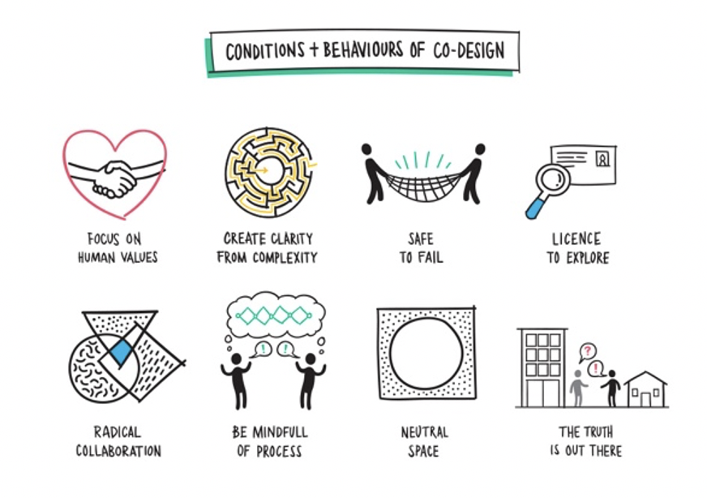

In dit onderdeel van het portfolio van Kai Kroon zal er verder ingegaan worden op het vak Smart Start. Hier zullen onder andere de week opdrachten, de competenties en mijn ervaringen binnen dit vak besproken worden.
Veel leesplezier!

Hier vindt u de een van de opdrachten die ik tijdens de minor gemaakt heb. Ik heb voor deze opdracht gekozen omdat ik hier het meeste van geleerd heb of hier zelf het meest trots op ben.
Mocht u de andere opdrachten nog willen zien kunt u altijd contact met mij hierover opnemen
Inleiding:
In dit onderzoek wordt het begrip co-design uitgelegd en wordt er verder in gegaan op verschillende vraagstukken over het onderwerp. Ook zal er een interview met Nicole Emers plaatsvinden over hoe co-design binnen haar werk bij Hornbach wordt toegepast.
Wat is co-design:
Co-design is een ontwerpmethode waarbij de eindgebruiker (Consument) bij het gehele productieproces betrokken worden. In dit geval kan het gaan om nieuwe producten, systemen of diensten. Met andere woorden brengt co-design dus partijen met verschillende gezichtspunten en competenties samen om een probleem aan te pakken. Hierdoor kunnen deze mensen hun kennis gebruiken om op deze manier tot meer innovaties te komen. (Hogeschool Utrecht, 2018)

Waarvoor is co-design allemaal bruikbaar:
Co-design kan voor verschillende dingen gebruikt worden. Zo kan het gebruikt worden bij de productie van nieuwe producten, ook kan het doormiddel van diensten het uiteindelijke product verbeteren. Op gebied van producten kan het bijvoorbeeld zo zijn dat een persoon een nieuwe fiets wil die voor zijn lichaam het beste is, hierin wordt deze persoon in het hele proces meegenomen waardoor alles op zijn behoeftes is afgesteld. (Hogeschool Utrecht, 2018)
Welke positie heeft co-design ten opzichte van system thinking en co-creatie:
Het verschil tussen co-design en co-creatie is dat bij co-design de nadruk ligt op het samen ontwerpen en bij co-creatie gaat het juist om het samen creëren van waarden. Dit creëren van waarden gaat op basis van gelijkwaardig partnerschap. System thinking (Systeemdenken) is een gestructureerde manier van denken in theorie en praktijk, waarbij verschijnselen worden beschreven in termen van systemen en processen. Dit sluit dus goed aan bij het onderwerp co-design. Kort samengevat bij co-design helpen gebruikers het bedrijf om tot een beter product te komen en bij co creatie gaat het juist om tegelijk waarde voor beide partijen te creëren. (Nina, 2015)
Wat is smart co-design:
Smart co-design is eigenlijk niet veel meer dan de naam zegt het gebruiken van co-design in een smart omgeving. Dit kan bijvoorbeeld door IoT samen in combinatie met co-design te gebruiken. Wat juist de sterkte hiervan is dat er hierdoor een smartoplossing komt voor ook een oplossing vanuit de mensen zelf, hierdoor wordt het uit verschillende punten bekeken.
Conclusie uit interview:
Zelf binnen een bedrijf zoals Hornbach wordt er op verschillende gebieden gebruikt gemaakt van co-design zo dat de klanten samen met het bedrijf bijvoorbeeld hun eigen keuken of badkamer samen kunnen stellen. Ook geeft Nicole aan dat er nog wel zeker ruimte is voor verbetering en dat bijvoorbeeld Ikea hier momenteel heel sterk mee bezig is.

De visie die voor mij belangrijk is op gebied van Smart Industry:
De snelle ontwikkelingen binnen de technologie gebruiken om zo duurzamer ten werk te gaan zodat volgende generaties op dezelfde manier van de aarde kunnen genieten zoals wij dat momenteel mogen doen.
Een van de meest inspirerende voorbeeld die nieuwe technologieën in de huidige markt is voor mijn wel Elon Musk. Elon Musk staat ook wel bekend als de CEO van het grote autobedrijf Tesla. Dit bedrijf wordt ook wel beschreven als de Apple onder de auto merken, ondanks dat het bedrijf al een paar keer dicht bij een faillissement gezeten heeft hebben ze toch op de dag van vandaag een grote klantengroep voor hen weten te winnen. Wat Musk met Tesla wil bereiken is de overgang van de huidige economie, gebaseerd op het winnen en verbranden van koolwaterstof, naar een economie op zonne-energie versnellen. Hieruit is dus de huidige auto van Tesla ontstaan, hierin hebben de gebruikers een volledig elektrische auto en hoeven deze mensen niet in te leveren op het gemak of rijplezier.
De eerste auto van Tesla was de dure sportauto de Roadster, dit is geen auto waarmee ze de markt kunne veroveren. Deze peperdure en gewilde sportauto is gemaakt voor een klein deel van het marktsegment waarmee ze veel geld kunnen ophalen. Dit opgehaalde geld investeren ze weer in nieuwe technologieën op zo een lager geprijsde auto te kunnen ontwikkelen die geschikt is voor een grotere markt.
Nu het bedrijf veel aan het groeien gaan ze zich steeds meer focussen op de productie van de energiebronnen op zonne-energie. Naast de superchargers en baterijen die nu in de auto zit gaan ze zich ook steeds meer focussen op daken en muren die zonne-energie opwekken en opslaan. Tesla staat voor toegankelijke innovatie, dit doen ze door de grenzen va het autorijden te verleggen en het maken van nieuwe technologieën voor de massa die zorgen voor een betere wereld.
Ook gebruikt Tesla technologieën om unieker en veiliger te kunnen rijden. Zo maken ze gebruik van de Autopilot die tot op zekere hoogte het auto rijden van de mensen over kan nemen. Hiermee zijn ze nog flink bezig om in de toekomst ervoor te zorgen dat er een volledig zelfrijdende auto is die helemaal veilig is voor de passagiers. Naast hun unieke focuspunt van de autopilots hebben ze ook verschillende gadgets en Easter Eggs toegevoegd aan de auto die ervoor zorgen dat de auto uniek en innovatief is voor de huidige klantengroep.
Wat voor mij dus heel inspireert is aan het bedrijf die aansluit bij mijn visie over Smart Industry is dat het bedrijf naast hun hoofddoel om duurzame auto’s te produceren ook bezig zijn met het verbeteren van de wereld doormiddel van het opwekken van duurzame energiedoormiddel van zonnepanelen. Hierdoor blijft de aarde in betere staat en wordt deze minder uitgeput. Hierdoor kunnen volgende generaties op dezelfde manier van de aarde genieten als wij dat momenteel mogen doen.
Een bedrijf waar ik zelf veel mee te maken heb buiten mijn studie is het hoog segment herenmode winkel Tijssen Mode. Hier ben ik al bijna 5 jaar een werknemer en heb ik dus ook vele verschillende fases van het bedrijf mee gemaakt.
Tijssen mode is een bedrijf dat zowel in de fysieke winkel als op onlinegebied aanwezig is. De fysieke winkel is gelegen aan de burchtstraat in Nijmegen. Uniek aan Tijssen mode is de service die ze bieden die aansluit bij hun assortiment van zeer luxeproducten.
Een van de Interne aspecten van Tijssen mode is bijvoorbeeld hun huidige collectie. Deze bepalen ze zelf en hierin doen ze hun best op een perfecte collectie samen te stellen die aansluit bij de behoefte van hun klanten. Naast de collectie zijn de aankleding van de winkel en het personeel ook twee aspecten die voor het succes van een winkel heel belangrijk zijn. Naast de interne aspecten heeft Tijssen Mode ook te maken met verschillende externe aspecten. Zo bevinden ze zich natuurlijk in een hoog concurrerende markt waarin de grote ketens het voor de kleinere bedrijven lastig maken. Hierin moet Tijssen mode zich goed onderscheiden van de concurrenten.
Zoals heeft Tijssen mode als elk bedrijf Sterktes en zwaktes, deze gaan gepaard met de Opportunity’s en threats van een bedrijf.


Tijssen mode is een bedrijf die al sinds 1946 in deze druk concurrerende markt opereert.
Hierin is er veel gebeurt en is het bedrijf ook door vele fases heen gegaan. De eerste drie stappen ‘sturing op incidenten, sturing op processen en sturing op standaardisatie’ is Tijssen mode naar mijn mening doorlopen. Wanneer er een probleem is wordt hier goed op geanticipeerd en meteen actie ondernomen. Ook zijn er steeds meer processen in de winkel waarop aangestuurd moet worden, zoals de webshop, de fysieke winkel en de social mediakanalen. Al deze processen nemen weer andere werkzaamheden met zich mee, deze processen zijn inmiddels standaard geworden in het bedrijf en worden dagelijks bijgehouden. Op gebied van sturing op Kwantitatieve gegevens doet Tijssen mode nog te weinig, er wordt niet voldoende gemeten en bijgehouden om hier nieuwe doelstellingen uit te bepalen. Hierin heeft Tijssen Mode dus nog vele groeimogelijkheden, waar ze in de loop van de tijd mee aan de slag kunnen.
De diepere betekenis achter Tijssen mode is toch echt dat het een familiebedrijf is die ontstaan is uit de liefde voor luxe en modieuze kleding. Momenteel zit de derde generatie al in het bedrijf en dit blijft zo doorgaan. Er is dus met vele klanten door de jaren heen een goede band opgebouwd die ook zorgt voor dat de klanten een gevoel hebben dat ze thuis zijn wanneer ze in de winkel komen. Naast de verkoop van de kleding is dit zeker een aspect wat Tijssen mode uniek maakt.
Voor mij als persoon is een goede communicatie heel belangrijk hier maakt het niet uit of het over school gaat of andere dingen zoals sport en met vrienden afspreken. Zelf heb ik alles graag goed geregeld zodat ik weet waar ik aan toe ben en dit ook in mijn agenda past. Dit is vooral fijn omdat ik het zelf vaak erg druk heb, maar doormiddel van een goede communicatie komt dit wel goed. Ook is een goede communicatie op mijn werk bij Tijssen Mode heel belangrijk, hier ben ik veel in contact met klanten waarbij het belangrijk is dat ik goed ABN spreek en duidelijk en concreet naar de klanten ben.

Met een goede communicatie kan je verschillende doelen bereiken. Zo kan je met een goede communicatieproblemen uit de weg gaan en een duidelijke planning maken. Dit kan dan uiteindelijk in het succes van een persoon om organisatie werken.
Ook kan er doormiddel van de juiste communicatie aan een relatie tussen personen gewerkt worden, soms zie je dat mensen volkomen langs elkaar heen praten en doormiddel van het luisteren naar elkaar en hierop ingaan voorkom je dit. Een manier die ik hiervoor tijdens mijn schoolperiode veel gebruikt heb is de LSD-methode, hierin probeer je eerst aandachtig naar een persoon te luisteren. Wanneer deze persoon klaar is ga je beknopt samenvatten wat de persoon gezegd heeft om te kijken of je het begrepen hebt, hierdoor krijgt de spreker ook echt het idee dat er goed naar ze geluisterd wordt. Wanneer dit gebeurd is kan je doorvragen om zo meer informatie over een bepaald onderwerp te krijgen. Zo kan je dat communicatie niet alleen belangrijk is maar ook wanneer je aan het luisteren bent naar iemand. Wat voor mij als persoon een van de belangrijkste doelen is wat betreft communicatie is het goed plannen van dingen doormiddel van een goede communicatie. Doormiddel van een duidelijke planning weet je wat je de doen staat en wat je van andere personen kunt verwachten. Zelf ben ik altijd een voorstander om een keer per week doormiddel van een kort en bondig gesprek even met ze alle kijkt of er hindernissen zijn waar mensen tegen aan lopen.
Een goede communicatie kan dus verschillende gevolgen hebben. Zo kan het bijvoorbeeld als ondernemer invloed hebben op je klanten, maar ook kan het je als persoon zelf verder helpen. Als ondernemer kan het bijvoorbeeld helpen met de relatie tussen het bedrijf en haar consumenten, ook kan je met de juiste communicatie een goede loyaliteit opbouwen met je klanten. Ook is een goede communicatie tussen de stakeholder belangrijk omdat deze ervoor zorgen dat het bedrijf voorzien wordt van spullen. Dit kan uiteindelijk helpen in het succes van de organisatie. Ook als persoon kan het helpen, zo kan je doormiddel van een goede communicatie binnen een korte meer en de juiste dingen bespreken met een persoon. Dit komt omdat je overbodige informatie achtwegen laat, ook is het handig om in gedachte te houden dat alle personen op een andere manier communiceren en hierdoor dus ook op een andere manier benaderd dienen te worden.
Maar wat is nu het uiteindelijke succes van een goede en effectieve communicatie? De mate waarin we succesvol zijn wordt 85% bepaald door de effectiviteit van onze communicatie. De andere 15% is de kennis en de kunde van een persoon, dit is natuurlijk ook een belangrijk aspect maar heeft dus een stuk minder invloed op het succes dan een goede communicatie.
Doormiddel van het PDCA-Model kan een bedrijf zichzelf als organisatie verbeteren. Hiermee kunnen ze doormiddel van 4 verschillende stappen werken, dit zijn plan, do, check & act. Ook kan dit model ingezet worden om de communicatie binnen een bedrijf te verbeteren. In de onderstaande afbeelding is te zien hoe ik zelf als leidinggevende gebruik zou maken van dit model om de communicatie efficiënter te laten verlopen. In dit geval zal het over mijn werk gaan en kijk ik vanuit de ogen van de leidinggevende. Momenteel is het een lastige tijd doormiddel van de Lock down, maar door goede communicatie zou deze tijd toch minder erg gemaakt kunnen worden.

Tijdens je hele leven kom je met verschillende mensen in aanraking, zo komt dat ook tijdens school en werk ter sprake. Deze mensen kunnen allemaal onder worden verdeeld in verschillende doelgroepen. Een doelgroep is een groep mensen die allemaal een aantal relevante kenmerken gemeenschappelijk hebben.
Tijdens school kom je bijvoorbeeld met verschillende doelgroepen in aanraking. Zo kom je in aanraking met bijvoorbeeld je medestudenten, de docenten, opdrachtgevers en verschillende gemeentes. Elke groep dient ook op een andere manier benaderd te worden. Zo kan je leeftijdsgenoten vaak met ‘je’ aanspreken, maar oudere spreek je uit respect met ‘U’ aan. Ook moet je tijdens je communicatie rekening houden met welke doelgroep je te maken hebt. Stel je doet een onderzoek naar elektronica dan zal je de jongeren op een hele andere manier kunnen benaderen dan de ouderen. Dit komt voornamelijk omdat de jongeren opgegroeid zijn met elektronica en bijna alle termen rondom dit onderwerp wel begrijpen. Bij ouderen zou je dit vaak extra moeten toelichten en zeker geen elektronica gerelateerde afkortingen gebruiken. Naast de benadering is het oriëntatie gedrag van elke doelgroep natuurlijk ook anders.
Tijdens mijn opleiding ondernemerschap en Retail Management heb ik al vele verschillende onderzoeken mogen doen. Hieruit bleek ook dat elke doelgroep op een andere manier de beste respons geeft. Zo is een online enquête heel gemakkelijk wanneer je informatie van mensen tussen de 16 en 50 nodig hebt. Deze enquête kan dan bijvoorbeeld via LinkedIn en facebook gedeeld woorden. Vaak zie je dat op een online enquête het aantal respons redelijk hoog ligt omdat het weinig tijd van een persoon in beslag neemt. Wanneer je meer informatie van een persoon nodig hebt dan is diepte-interview hier een goede methode voor. Ook hier zijn verschillen in, helemaal in de huidige tijd rondom Covid-19. Zo vinden jongeren het vaak makkelijk om een interview via teams te houden, deze kan dan ook opgenomen worden en dit is weer handig voor de analyses. Vaak heb ik wel gezien dat ouderen mensen het toch liever persoonlijk houden, hierin kunnen ze altijd meer informatie kwijt en zorgt dit ook niet voor moeilijkheden met het gebruiken van bijvoorbeeld teams.
Ik heb dus tijdens mijn opleiding ingezien dat de benadering van een doelgroep als het gaat om het doen van een onderzoek heel belangrijk is, dit zie je ook vaak terug in de resultaten.
Er dient dus van tevoren een duidelijke onderzoek verantwoording gemaakt te worden om zo toe te lichten waarom er voor een bepaald onderzoek gekozen is.
Aan het begin van deze minor had ik verschillende doelen voor mezelf opgesteld die ik in dit semester bij behalen of omgang brengen.
- Een belangrijk doel van mij was meer leren over Smart Technologieën en hoe deze in een bedrijf toegepast kunnen worden.
- Een ander doel was het zelf leren werken met verschillende technologieën zoals IoT of 3D printen
- En tot slot was een belangrijk doel voor mijn toekomst mijn netwerk zo ver mogelijk uit te breiden, hiervoor wou ik als doel voor het einde van mijn minor 500+ connecties hebben op LinkedIn.
Meer leren over Smart Technologieën en hoe deze in een bedrijf toegepast kunnen worden.
Dit wou ik voor mezelf bereiken omdat ik hier nog niet veel van af wist terwijl het in het dagelijks leven steeds belangrijker wordt. Zo gebruik ik zelf ook veel verschillende Smart Technologieën zoals een online cloud, een smart watch en IoT in het dagelijks leven. Hier wou ik graag meer over leren. Ook om me zo goed mogelijk voor te bereiden op mijn toekomst wou ik meer weten over de Back End van een website. Tijdens mijn werk ben ik veel bezig geweest het onderhouden van de webshop en producten toevoegen, maar dit was niet doormiddel van programmeertaal. Dit was ook een belangrijk aspect wat ik wou weten hoe dit in zijn werking ging.
Het zelf leren werken met verschillende technologieën zoals IoT of 3D printen
Naast dat ik de verschillende technologieën zou leren kennen, wilde ik hier ook zelf mee leren werken. Dit leek me vooral interessant omdat ik zelf als persoon in de praktijk altijd meer leer dan vanuit de boeken. Ik leer zelf altijd namelijk door dingen uit te proberen. Ik hoef deze technologieën niet te blijven beheersen zoals 3D printen, maar vind het juist leuk om hier in de praktijk meer kennis over op te doen.
Mijn netwerk zo ver mogelijk uit te breiden, hiervoor wou ik als doel voor het einde van mijn minor 500+ connecties hebben op LinkedIn.
Dit is voor mijzelf heel belangrijk omdat ik steeds vaker inzie en meemaak dat een groot netwerk je als persoon heel veel helpt. Hierdoor wil ik mijn netwerk zo goed mogelijk onderhouden en uitbreiden met mensen waarmee ik in contact gekomen ben. Ook is dit een heel anders soort branche waarin ik kan netwerken dan dat ik gewend ben bij mijn werk en huidige opleiding.

Ik heb deze doelen besproken met mijn klasgenoot en goede vriend Bas. Hij vond het duidelijke en goed opgestelde doelen, die mijn in de rest van mijn carrière zeker verder kunnen helpen. Hij gaf mij al tip om dingen te filmen wanneer ik bezig ben met het leren werken met Smart Technologieën. Dit heb ik ook zeker gedaan en dit was een zeer goede tip van hem waarmee ik verder kon. Ook vond hij het doel van de connecties op LinkedIn goed, hier zou hij zelf ook mee aan de gang gaan. Dit vond ik mooi dat ik hem met mijn doel kon aanzetten om zelf ook goed zijn LinkedIn bij te houden.
Wat voor mij tijdens school maar ook buiten school aandachtspunten blijven waar ik mee aan de slag moet gaan om deze te verbeteren zijn:
- Mijn concentratie verbeteren
- Zorgen dat ik niet te veel hooi op mijn vork neem waardoor het onoverzichtelijk wordt
- Beter op mijn articulatie letten zodat ik beter te verstaan ben.
Mijn sterktes en zwaktes rondom deze aandachtspunten:

Aan de hand van deze sterktes en zwaktes kunnen er stappen ondernomen worden om mezelf als persoon te verbeteren. Hierdoor kunnen de Oppertunities en threats voor mij in kaart gebracht worden.

Hoe ik in mijn aankomende periode hier verder mee wil groeien zal er als volgt uit gaan zien.
Op gebied van concentratie:

Het verbeter van mijn concentratie zal beginnen met het weghalen van het grootste probleem, dit is het wegleggen van afleidende factoren. Mijn mobiel is een van mijn grootste afleidende factoren waardoor mijn concentratie niet optimaal is. Wanneer deze factoren weg zijn dan wil ik mijn concentratie gaan boosten doormiddel van het inlassen van korte pauzes. Hiernaast is het ook belangrijk dat ik een duidelijk planning heb met wat ik precies moet doen om zo duidelijkheid te creëren.
Op gebied van te veel willen doen:

Om te voorkomen dat ik te veel hooi op mijn vork neem, zal er eerst een duidelijke op papier gezet moeten worden wat er alleen gedaan dient te worden. Hierna zullen de werkzaamheden verdeelt moeten worden om zo een eerlijke verdeling te handhaven. Wanneer dit gedaan is zal er duidelijk met de rest gecommuniceerd moeten worden om zo de werkzaamheden op elkaar af te stemmen.
Op gebied van het verbeteren van mijn articulatie:

Op mijn articulatie te verbeteren is het voor mij als persoon eerst belangrijk dat ik duidelijk heb wat ik wil gaan zeggen. Bij een zakelijk gesprek kan dit bijvoorbeeld doormiddel van een briefje met steekwoorden. Hiernaast is het voor mijn handig dat ik rustiger probeer te praten, zeker wanneer ik extra enthousiast ben. Ook kan ik bij sommige gesprekken vragen of alles duidelijke was en of hij of zij nog tip heeft waardoor ik beter te begrijpen ben.